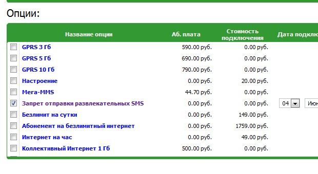

Может скучающим пенсионерам и незанятым делом пионерам от SMS на короткие номера и есть какая-то польза, но случайные траты от 30 до 150 рублей с телефона сына, неумеющего пока читать мелкий шрифт с правилами сервисов, для частного предпринимателя вроде меня ноша не столько тяжелая, сколько обидная.
После того как баланс на его телефоне в очередной раз вдруг ушёл в минус, решил решить эту проблему.
Зашёл в Сервис-Гид от Мегафона и заказал детализацию счёта.
В детализации за вчера значилась такая строчка
| 03.06.2011 11:26:19 | SMS | Справочно-информационные услуги | Справочно-информ.услуги | SMS | 1 | 34.22 | |
Сама строчка никакой пользы не несла, кроме как подтверждала, что деньги были потрачены зря.
Строчка сверху была уже более полезна.
| 03.06.2011 11:26:19 | Сообщение (4446) | Исходящие SMS | 4446 | 0.00 | |||
Она хоть и значится в детализации бесплатной, но короткий номер 4446, и одно и то же время с нижней строкой, указывают что дело всё таки в коротком, но платном SMS.
Позвонил в Мегафон по бесплатному номеру 8 800 333 05 00. Времена, кстати, меняются. Если раньше «Оператор ответит на ваш звонок не менее чем через 15 минут»… и отбой звонка, то сейчас через каких-то 2 минуты Анна любезно проконсультировала меня, что возможность отправки коротких SMS в современном мире вполне себе отключается. Спросила нужно ли сделать это сейчас. Я ответил, что сделаю это сам через вышеупомянутый Сервис-Гид.
Так как найти место где отправка отключается получилось не сразу, укажу правильную дорогу. Услуги и тариф -> Изменение тарифных опций. Неясно почему это «тарифная опция», ну да ладно.

Радует, что бизнес становится хоть немного цивилизованным.